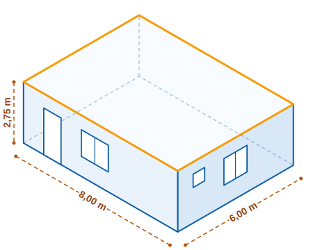

Leer una planta
Interpretar una planta arquitectónica sencilla: espacios, muros, puertas, ventanas y cotas.
Una experiencia educativa para interpretar planos arquitectónicos y relacionar la planta, la elevación y el corte de una vivienda con su forma tridimensional. Aprende con una casa ficticia sencilla y comprueba lo que entiendes paso a paso.

Interpretar una planta arquitectónica sencilla: espacios, muros, puertas, ventanas y cotas.
Conectar la planta con su elevación y su corte, y reconocer qué elemento es cuál en cada vista.
Verificar si una representación tridimensional básica corresponde con la información de los planos.
Repasa qué es una planta, una elevación y un corte, y los símbolos que verás en los planos.
Supera tres retos progresivos sobre una misma vivienda y acumula puntos por interpretar bien.
Consulta tu resultado, qué conviene repasar y vuelve a practicar cuando quieras.
Trabajarás con una casa ficticia de un solo nivel, de 8,00 m por 6,00 m, con sala-comedor, cocina, dormitorio y baño. Es lo bastante sencilla para fijarte en lo esencial de cada plano.
Recurso educativo. Los datos de la vivienda son ficticios. Esta experiencia no sirve para diseñar, calcular ni revisar edificaciones reales.